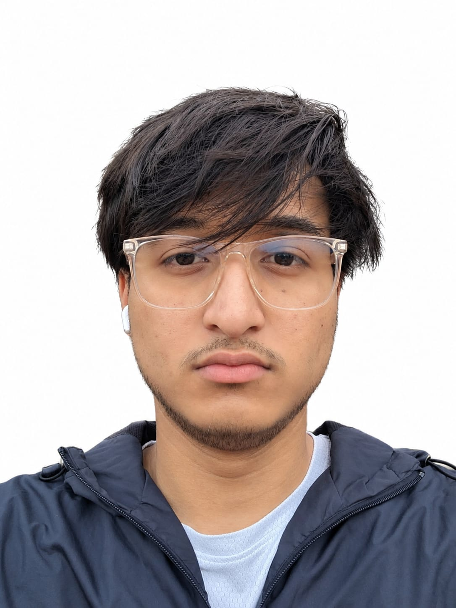

Robotics & intelligent systems
How machines sense, make decisions and interact with the physical world.
COMPUTING · AI · ROBOTICS · IoT
I’m Aashish Shrestha, a computing student in Nepal who likes figuring out how things work. I’m studying Computing with AI at Softwarica, while exploring robotics, electronics and the connection between code and the physical world.
“The important thing is to never stop questioning. Curiosity has its own reason for existing.”
— Albert Einstein
01 / THE BUILDER01 — A LITTLE ABOUT ME
I’m currently studying BSc (Hons) Computing with AI at Softwarica College. I’m building my foundations in programming, mathematics, computing and artificial intelligence.
I’m especially drawn to projects where code has a real-world result: a motor moving, a sensor responding or a device communicating. I’m still building my foundations, so I try to understand the small pieces instead of pretending to know everything already.
This site is my running record of that process — the things I build, the ideas I’m testing and the lessons I don’t want to forget.
See my learning journeyAsk questions and understand the fundamentals.
Turn ideas into small, testable experiments.
Learn from mistakes and make the next version better.
02 — WHAT EXCITES ME
A few fields I’m curious about — and want to understand through study and hands-on work.
How machines sense, make decisions and interact with the physical world.
Microcontrollers, sensors and devices that collect information and respond.
Learning how intelligent software finds patterns and solves useful problems.
Writing clear, reliable software and learning how complete systems fit together.
03 — SELECTED WORK
A small record of things I’ve worked on so far. I’ll add to it as I build, test and learn.
One of our first hands-on projects as a team of three friends. We built a smartphone-controlled robotic car while learning Arduino programming, wireless communication and motor control together.
NOTE This was a collaborative project. The case study describes the system and team build; individual contributions will be added accurately after review.
04 — OUTSIDE THE CLASSROOM
Not everything here is a finished project. These are the practical areas I’m learning about and want to explore properly.
Getting familiar with basic tools, safe working habits, soldering and how electronic parts connect.
Building on a team project that introduced me to microcontrollers, Bluetooth communication and driving motors.
Learning how sensors gather information and how small devices can communicate and respond to their surroundings.
05 — THE JOURNEY SO FAR
I’m at the beginning of my computing journey. Here’s where I’m learning and what I’m currently working on.
Softwarica College
Developing foundations in programming, computing, mathematics and artificial intelligence.
Grammar College · Science faculty · Physics (Non-Biology)
Completed Grades 11–12 in the Science stream, studying Physics and Mathematics.
Grammar School
Completed school education through Grade 10, building the foundations for further study.
Team project · Grammar College
An early hands-on introduction to Arduino, electronics and wireless control.
06 — CURRENTLY LEARNING
I prefer to be honest about what I’m learning rather than list tools as expertise before I’ve earned it.
07 — GET IN TOUCH
I’m always interested in learning, technology and thoughtful projects. Feel free to reach out.